main course
LIVE
LOVE
EAT
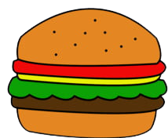
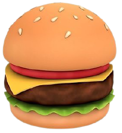
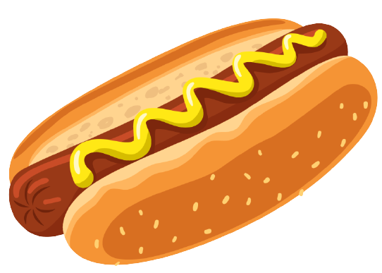
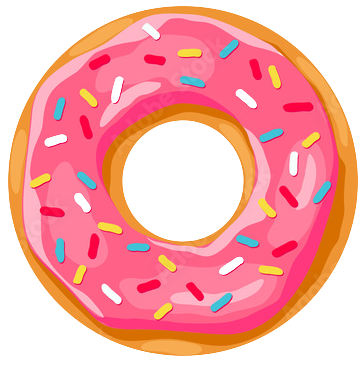
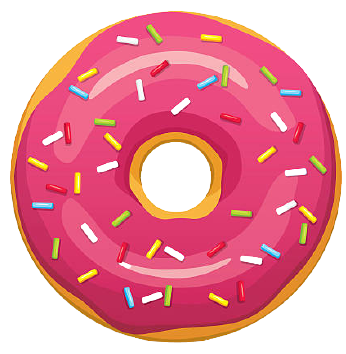
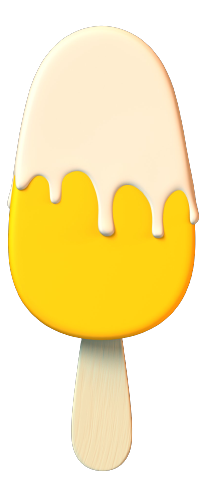
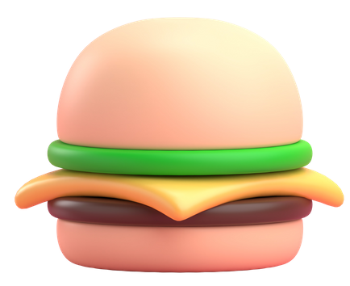
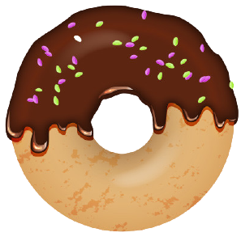
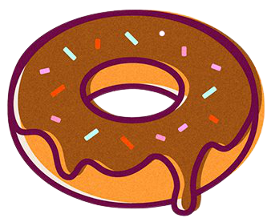
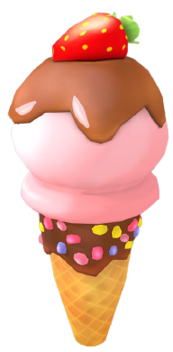
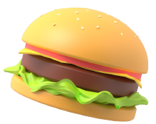
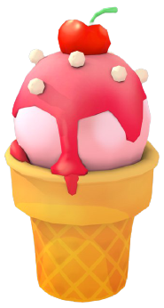
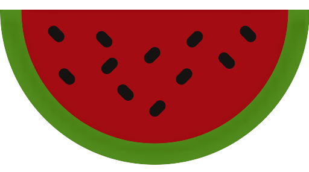
favourite foods
#SUSHI

Sushi is a traditional Japanese dish of prepared vinegared rice, usually with some sugar and salt, accompanied by a variety of ingredients, such as seafood, often raw, and vegetables. Styles of sushi and its presentation vary widely, but the one key ingredient is "sushi rice" also referred to as shari, or sumeshi.
#PIZZA
Pizza. is a dish of Italian origin consisting of a usually round, flat base of leavened wheat-based dough topped with tomatoes, cheese, and often various other ingredients, which is then baked at a high temperature, traditionally in a wood-fired oven. A small pizza is sometimes called a pizzetta.

#SANDWICHES
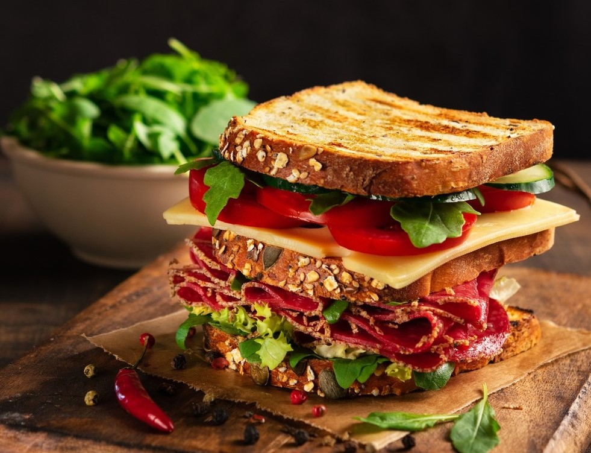
Sandwiches are a popular type of lunch food, taken to work, school, or picnics to be eaten as part of a packed lunch. The bread may be plain or be coated with condiments, such as mayonnaise or mustard, to enhance its flavour and texture. As well as being homemade, sandwiches are also widely sold in various retail outlets and can be served hot or cold.
#KEBABS
kebab. Kebabs consist of cut up or ground meat, sometimes with vegetables, and various other accompaniments according to the specific recipe. Although kebabs are typically cooked on a skewer over a fire, some kebab dishes are baked in a pan in an oven or prepared as a stew such as tas kebab.
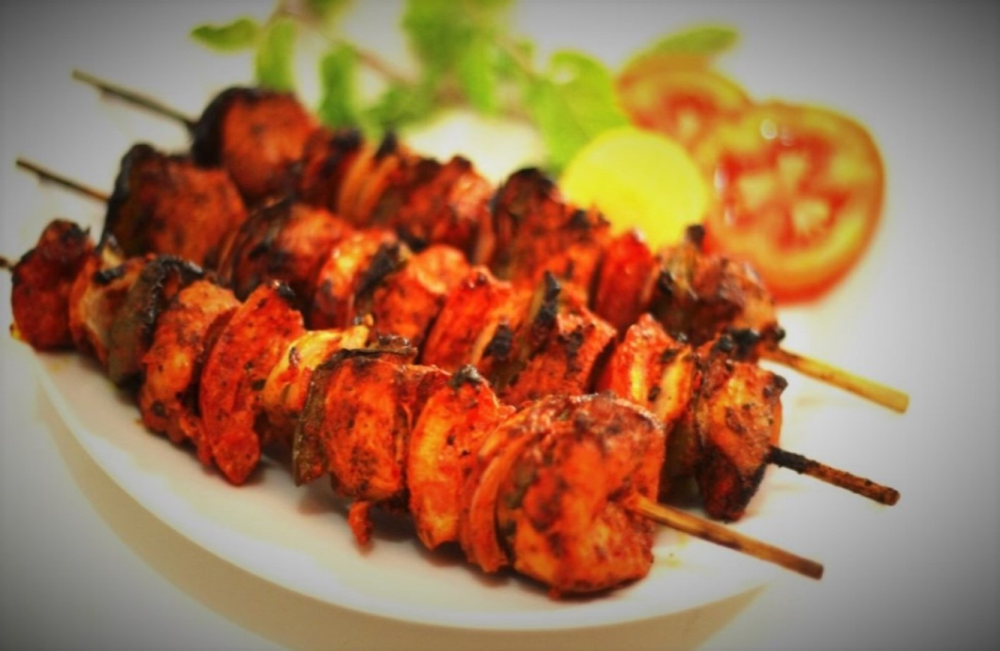
#PASTA
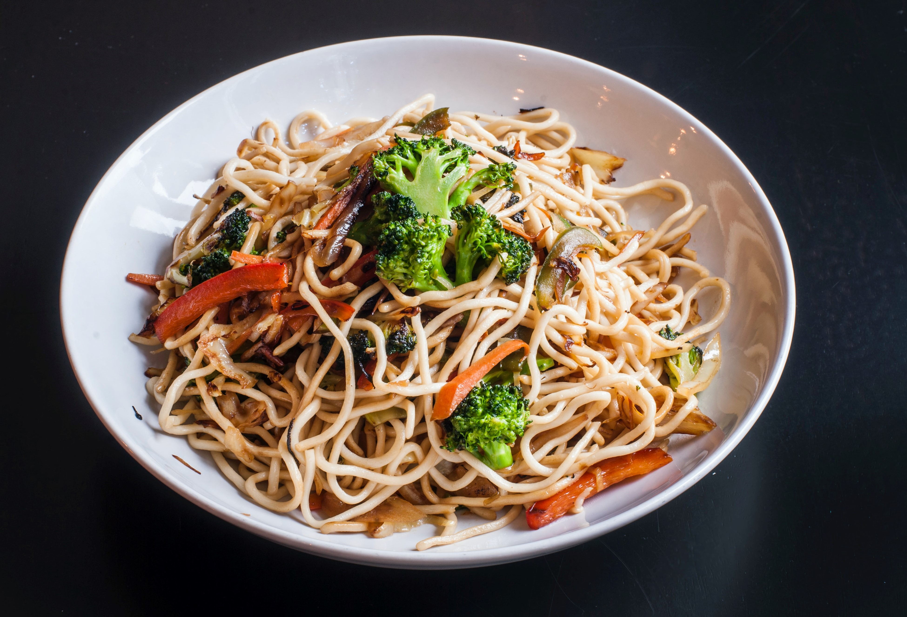
Pasta is a type of food typically made from an unleavened dough of wheat flour mixed with water or eggs, and formed into sheets then cooked by boiling or baking. Rice flour, such as beans , are sometimes used in place of wheat flour to yield a different taste and texture. Pasta is a staple food of Italian cuisine.
#HOT DOG
A Hot dog A hot dog is a dish consisting of a grilled or steamed sausage served in the slit of a partially sliced bun. The term hot dog can also refer to the sausage itself. The sausage used is a wiener or a frankfurter. The names of these sausages also commonly refer to their assembled dish.
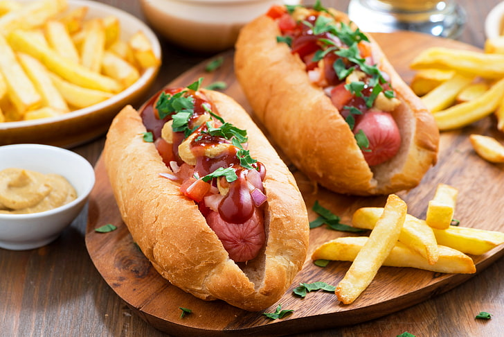
“There is no love sincerer
than the love of food "
― George Bernard Shaw
than the love of food "
― George Bernard Shaw
break fast
#FRENCH TOAST
French toast. is a dish made of sliced bread soaked in beaten eggs and typically milk, then pan fried. Alternative names and variants include "eggy bread", "Bombay toast", "gypsy toast", and "poor knights"

#MASALA DOSA

Masala dosa is a variation of the popular South Indian dosa, which has its origins in Tuluva Udupi cuisine of Karnataka and Malabar Cuisine of Kerala. It is made from rice, lentils, potato, fenugreek, ghee and curry leaves, and served with chutneys and sambar.
#NOODLES
Noodles are a type of food made from unleavened dough which is rolled flat and cut, stretched or extruded, into long strips or strings. Noodles can be refrigerated for short-term storage or dried and stored for future use. Noodles are usually cooked in boiling water, sometimes with cooking oil or salt added.
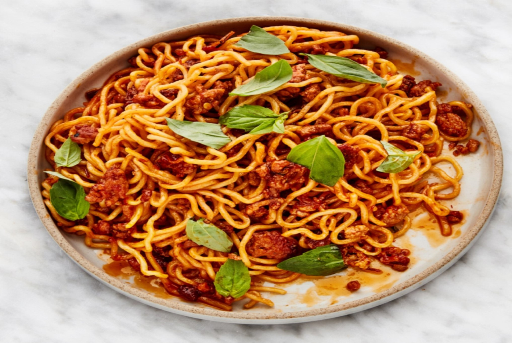
#BEEF STEAK
beef steak , often called just steak, is a flat cut of beef with parallel faces, usually cut perpendicular to the muscle fibers. In common restaurant service a single serving has a raw mass ranging from 120 to 600 grams. Beef steaks are usually grilled, pan-fried, or broiled
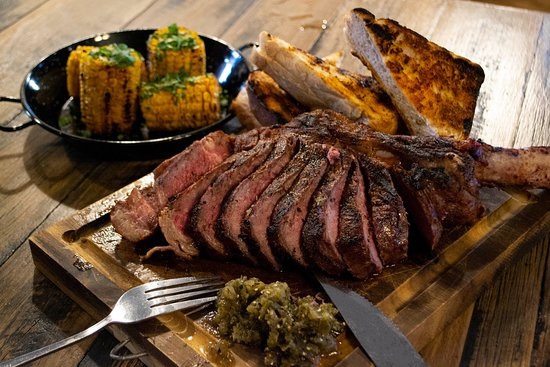
#FISH MANDHI
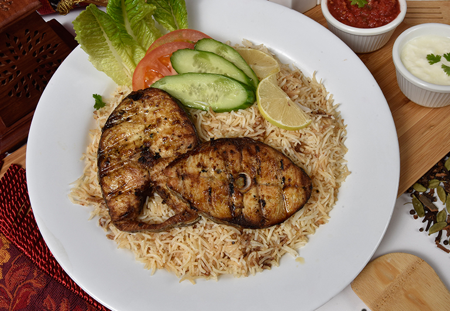
Mandi was usually made from rice, meat (lamb, camel, goat or chicken), and a mixture of spices called hawaij. The meat used is usually a young and small sized lamb to enhance the taste further. The main technique which differentiates mandi from other meat dishes is that the meat is cooked in the tandoor
cakes
# CONFETTI CAKE
Confetti cake is a type of cake that has rainbow colored sprinkles baked into the batter. It is called confetti cake because when baked, the rainbow sprinkles melt into dots of bright color that resemble confetti.
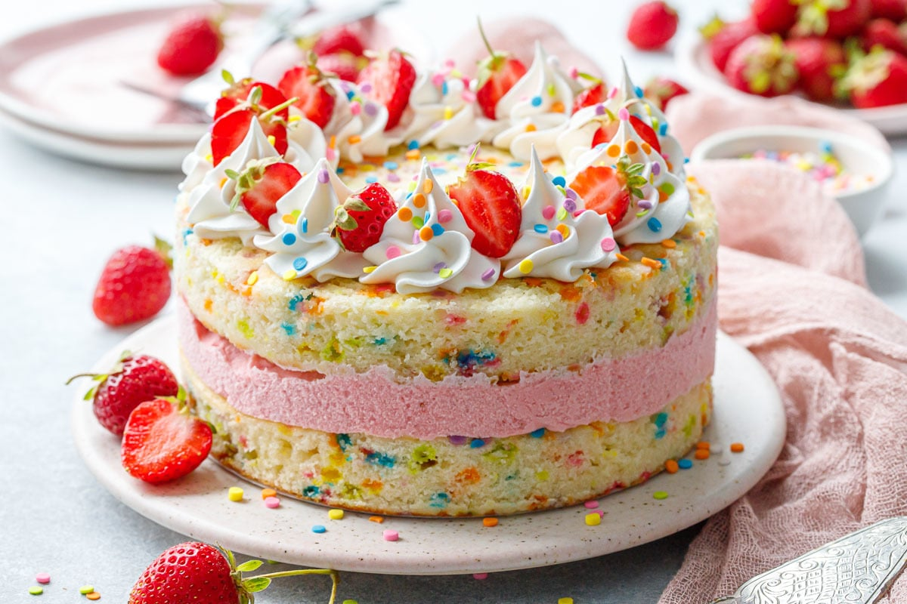
#CHOCOLATE CAKE
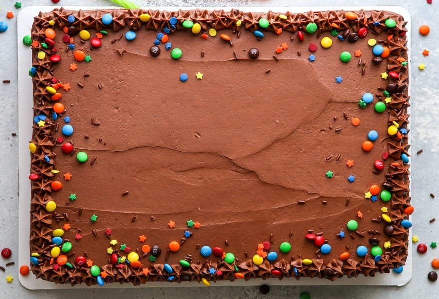
Chocolate cake is a cake flavored with melted chocolate, cocoa powder, or both.Chocolate cake is made with chocolate. It can also include other ingredients.These include fudge, vanilla creme, and other sweeteners.
cookies